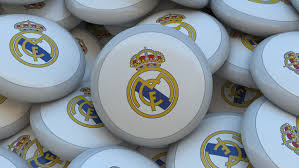

Real Madrid Club de Fútbol commonly known as Real Madrid, or simply as Real, is a professional football club based in Madrid, Spain.
Founded on 6 March 1902 as Madrid Football Club, the club has traditionally worn a white home kit since inception. The word Real is Spanish for Royal and was bestowed to the club by King Alfonso XIII in 1920 together with the royal crown in the emblem. The team has played its home matches in the 81,044-capacity Santiago Bernabéu Stadium in downtown Madrid since 1947. Unlike most European sporting entities, Real Madrid's members (socios) have owned and operated the club throughout its history
Real Madrid established itself as a major force in both Spanish and European football during the 1950s, winning five consecutive European Cups and reaching the final seven times. This success was replicated in the league, where the club won five times in the space of seven years. This team, which consisted of players such as Alfredo Di Stéfano, Ferenc Puskás, Francisco Gento and Raymond Kopa, is considered by some in the sport to be the greatest team of all time. In domestic football, the club has won 64 trophies; a record 33 La Liga titles, 19 Copa del Rey, 10 Supercopa de España, a Copa Eva Duarte, and a Copa de la Liga. In European and worldwide competitions, the club has won a record 24 trophies; a record 12 European Cup/UEFA Champions League titles, two UEFA Cups and four UEFA Super Cups. In international football, they have achieved a record six club world championships

About 150,000 jubilant Real Madrid fans flocked to the city’s central Cibeles fountain on Saturday to join the players for a celebration of their record-extending 35th LaLiga title which was clinched with a 4-0 home win against Espanyol.
The supporters started gathering around the central landmark where the club usually celebrate their successes almost an hour before the end of Saturday’s game, which Real won easily with two first-half goals by Rodrygo spurring them on.
Traffic restrictions were put in place as early as Friday while a stage was built around the fountain where the players on an open-top bus traditionally join the fans coming from the Santiago Bernabeu to continue the party.
.png)